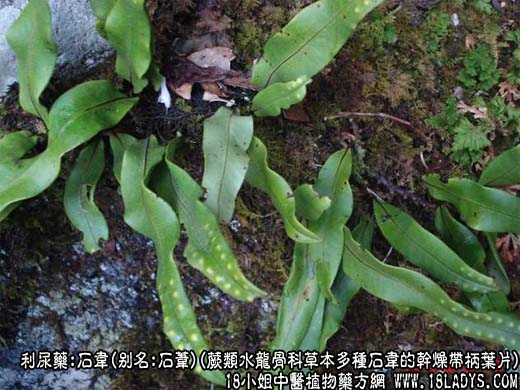
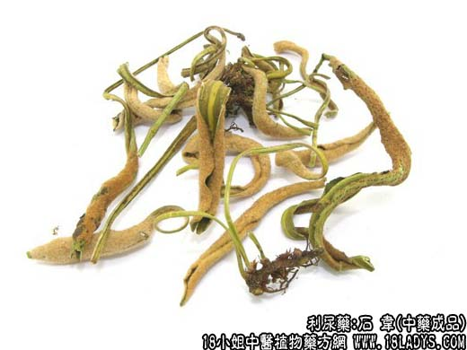
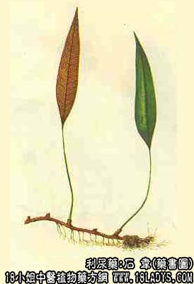

石韦为少常用中药，《神农本草经》列为中品。
别名：石苇、石尾。
来源：为蕨类水龙骨科多年生草本植物石韦、庐山石韦、毡毛石韦、有柄石韦、北京石韦等多种石韦的干燥带柄叶片，均为野生。
产地：主产于华东、中南、西南各地区，此外华北、西北、东北各地也有分布，喜生长于温热潮湿的山林溪流地带。
性状鉴别：叶片多披针形也有戟形。有长柄，大小不一。最小者长5～10厘米，最大者长30～60厘米。叶片表面黄绿色，老叶面上生有多条纵顺棕黑色小店，背面密生星状柔毛如毡，嫩时灰白色或驼色。老后满布孢子囊群，呈棕色，叶片革质，硬脆易碎断，气无，味微苦。
习惯以叶大、质厚，表面淡绿色，背面有棕色毛者为佳。
主要成分：含皂甙、蒽醌类、黄酮类绵马三萜、异芒果素等。
药理作用：1、利尿；2、清热止血；3、抗菌，对金黄色葡萄球菌、变形杆菌、大肠杆菌有不同程度的抑制作用；4、抗流感病毒。
炮制：刷去背面星状毛和孢子囊，切丝生用。
性味：甘苦、微寒。
归经：入肺，膀胱经。
功能：利尿通淋。
主治：热淋、血淋、尿涩作痛。
临床应用：实际应用不如萹蓄、萆薢普遍。但在利尿清热和止血方面，仍有其特长。
2、用于清热止血，如血淋或石淋而有血尿，可配当归、芍药、紫珠草等，方如石韦散加减。如为热症吐血，可用石韦50g，浓煎顿服。
3、近年来试用于治白细胞减少，配红枣，方如石韦红枣汤：石韦30g、红枣15g，水煎服，每日一剂。
用量：6～30g。
处方举例：石韦散加减（《普济方》）：石韦30g，旱莲草18g，紫珠草12g，白芍12g，瞿麦12g，冬葵子30g，白术12g，滑石18g，当归9g，炙甘草4.5g，水煎服，治肾结石血尿。
注：石韦的原植物很多，分布地区甚广。商品分为大叶石韦和小叶石韦两类，同等药用。但叶片的背面必需具有密生棕黄色柔毛者才能药用。多种瓦苇和骨牌蕨，星蕨，其叶背面孢子囊作两列点状排列，而无星状密生的柔毛，习惯不作药用。